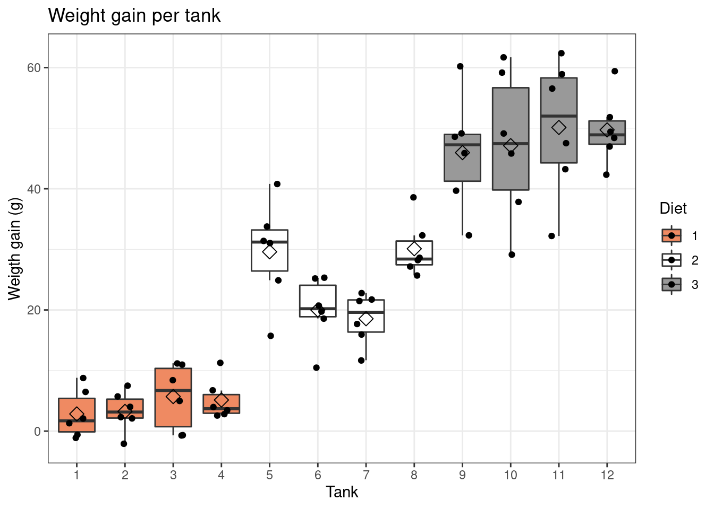
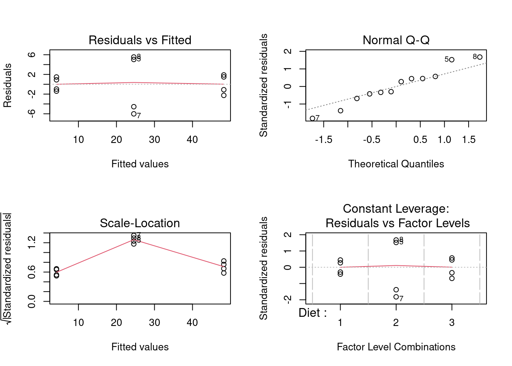

Researchers want to assess the effect of three different diets on the weight gain of fish. They have set up an experiment with 12 different tanks of fish. Each tank contains the same number of fish. The weight of 6 fish in each tank was measured at the beginning and the end of the experiment. The researchers recorded the weight gain.
The explanatory variable in the experiment is the factor type of diet
There are 3 diet types: diet 1, diet 2, and diet 3.
The experimental unit is the tank: the diet treatments are adopted on the tanks, i.e., the tanks are randomized to the diet treatments.
The weight gain is the response and it is measured on each fish which are the observational units.
Import libraries
library(tidyverse)fish <- read.table("https://raw.githubusercontent.com/statOmics/PSLS21/data/fishTank.txt",header=TRUE)
head(fish)fish <- fish %>%
mutate(Tank = as.factor(Tank), Diet = as.factor(Diet))fish %>%
ggplot(aes(x = Tank, y = WtGain, fill=Diet)) +
geom_boxplot(outlier.shape=NA) +
geom_jitter(width = 0.2) +
ggtitle("Weight gain per tank") +
ylab("Weigth gain (g)") +
stat_summary(fun = mean, geom="point", shape=5, size=3, color="black", fill="black") +
scale_fill_brewer(palette="RdGy") +
theme_bw()
The diets are randomized to the tanks, hence, the tanks are the experimental units.
We measure the weight of fish, they are the observational unit.
We measure multiple fish for each tank, hence the fish of the same tank are pseudoreplicates. Indeed, fish from the same tank are exposed to more similar conditions and their measurements will be more similar and are thus not independent.
If we do not account for this pseudoreplication our (regression) analysis and consider all fish as independent repeats, the standard error on the estimate for the diet effect will be underestimated, resulting in overly liberal inference.
To account for pseudoreplication in the data, we can average over the pseudoreplicates because we assess the same number fish in each tank. Hence, the tank averages will have an equal precision.
Note, that prior to averaging, the experimental unit was the tank, while the observational unit was the fish inside the tank. After averaging, the tank will be both the experimental and the observational unit of the experiment.
Averaging can be achieved with the group_by and
summarise functions of the dplyr R
package.
fish <- fish %>%
group_by(Tank, Diet) %>%
summarise(aveWtGain = mean(WtGain))## `summarise()` has grouped output by 'Tank'. You can override using the `.groups` argument.fishNow, the weight gain values are averaged over de six fish in each of the tanks.
List assumptions:
After averaging the weight gain values over de six fish in each of the tanks, we dealt with the pseudo-replication within tank and we expect the tanks to be independent repeats.
To assess the remaining assumptions, we first fit a linear regression model.
lmDiet <- lm(aveWtGain ~ Diet, fish)
par(mfrow=c(2,2))
plot(lmDiet)
We see some undesirable patterns in the diagnostic plots of the linear model.
While the smoother for assessing linearity in the data is flat and centered around zero, there is a much larger spread around the smoother for the observations (tanks) of the second diet type (tanks 5-8). These tanks are also flagged in the QQ-plot. Finally, the same tanks seam to have a larger variability in Diet 2 and/or additional tank/batch effects seem to occur. The tanks seem to cluster per two tanks and do not seem to be independent. We therefore have to be careful with the interpretation of the results.
lmDiet <- lm(aveWtGain ~ Diet, fish)
library(car)
anova_diet <- Anova(lmDiet, type=3)
anova_dietThere is an extremely significant effect of the diet on the average weight gain of fish (p << 0.001). Note, that we have to be cautious with the interpretation due to the violation of the model assumptions
library(multcomp)
multComp <- glht(model = lmDiet,
linfct = mcp(Diet = "Tukey"))
sumDiet <- summary(multComp)
sumDiet##
## Simultaneous Tests for General Linear Hypotheses
##
## Multiple Comparisons of Means: Tukey Contrasts
##
##
## Fit: lm(formula = aveWtGain ~ Diet, data = fish)
##
## Linear Hypotheses:
## Estimate Std. Error t value Pr(>|t|)
## 2 - 1 == 0 20.333 2.698 7.536 <1e-04 ***
## 3 - 1 == 0 44.000 2.698 16.308 <1e-04 ***
## 3 - 2 == 0 23.667 2.698 8.772 <1e-04 ***
## ---
## Signif. codes: 0 '***' 0.001 '**' 0.01 '*' 0.05 '.' 0.1 ' ' 1
## (Adjusted p values reported -- single-step method)confDiet <- confint(multComp)
confDiet$confint## Estimate lwr upr
## 2 - 1 20.33333 12.80213 27.86453
## 3 - 1 44.00000 36.46880 51.53120
## 3 - 2 23.66667 16.13547 31.19787
## attr(,"conf.level")
## [1] 0.95
## attr(,"calpha")
## [1] 2.79139There is an extremely significant effect of the diet on the average weight gain of fish (p << 0.001). The average weight gain of fish is extremely significantly different between all three diets (all p << 0.001).
The weight gain of fish in diet 3 is on average 44g and 23.7g higher than that for fish that were fed with diet 1 and 2, respectively (95% CI [36.5, 51.5] and [16.1, 31.2], respectively). The weight gain of fish in diet 2 is on average 20.3g higher than that for fish that were fed with diet 1 (95% CI [12.8, 27.9]).
Note, however, that the assumptions of test are violated, i.e. larger variability in Diet 2 and/or additional tank/batch effects in Diet 2. Indeed, the tanks seem to cluster per two tanks, which may indicate additional batch effects. We therefore have to be very careful with the interpretation of the results.